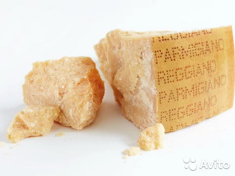
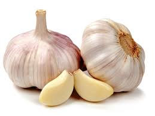
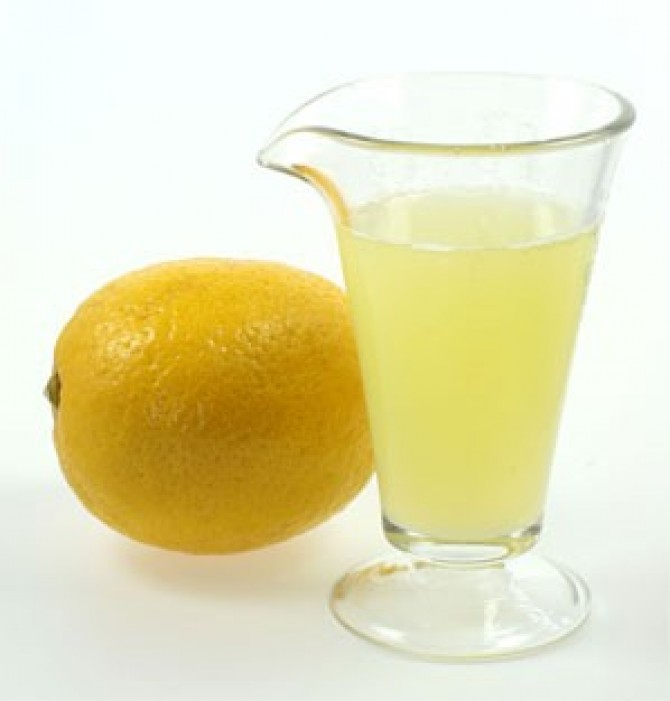

Информация о блюде
| Описание | Диетическая паста - вкусное блюдо, входившее в рацион моей жены, когда она сидела на жесткой диете. |
| Каллории | 110 кКал |



50 г

2 зуб

2 ч.л.

Способ приготовления
- Свежую петрушку, пармезан, чеснок и соль складываем в чашу блендера.
- Измельчаем до консистенции однородной сухой крошки.
- Добавляем в получившуюся крошку оливковое масло и лимонный сок. Взбиваем еще раз - получится песто (по консистенции что-то сродни аджике).
- Пасту отвариваем до готовности так, как указано на упаковке. Смешиваем в кастрюле отваренную до готовности пасту, песто и немного воды, в которой варились макароны. Перемешиваем и прогреваем блюдо 1 минуту, пока ингредиенты не перемешаются.
- Когда паста и песто смешаются - снимаем с огня и немедленно подаем.